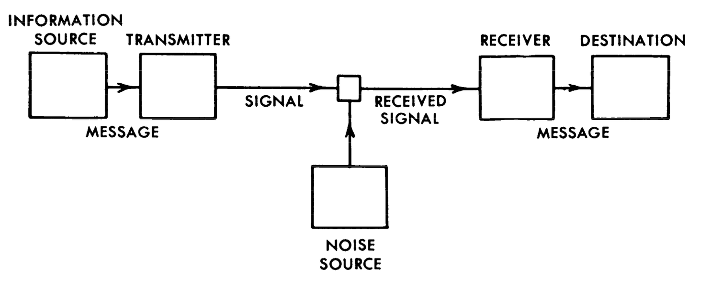

From Bits to Embeddings – A Critical Introduction to Information Theory
The ubiquity of the Noisy Channel and the Conduit Metaphor of communication.
1 Why Information Theory?
This website provides supplementary context for the articles “Cosine Capital: Large language models and the embedding of all things” (Big Data & Society, October 2025) and “Taking AI into the Tunnels” (e-flux, January 2025), along with some upcoming articles on the same topic. More than that, it provides a comprehensive introduction to classical information theory as it was conceived by Claude Shannon and its connections and impacts on neural network and large language model (LLM) research today through a parallel reading of information theory in the social sciences since World War II.
1.1 The Noisy Channel and the Conduit Metaphor
Information theory relies on a very particular metaphor that understand communication as a sort of “conduit”: You encode a message with a key, send the encoded message to a receiver, who decodes it with the same key, and reads the message. For instance, if you write “SOS” in Morse code, they “key” is the table that tells you how many dots (.) and dashes (-) to use for the letters S and O. In this case, the encoded version of your message is “…—…”, i.e. three dots, three dashes, and, again, three dots.
Reddy, M. (1993). The conduit metaphor. In Metaphor and thought, 2nd ed., pp. 164–201. Cambridge University Press.
Lakoff, G., & Johnson, M. (2008). Metaphors we live by. University of Chicago Press.
No where is this logic as neatly encapsulated as in the “The General Communications System” deviced by Claude Shannon, who is widely concidered the father of modern information theory. In this diagram, a sender picks a message (SOS), encodes it (… — …) using an appropriate device, sends it over a channel such as telegraph wires to a receiver, that then decodes the original “SOS” message from the dots and dashes. In the process, physical distortion on the line might scramble the encoded message, perhaps converting it to “… — ..-”. In this case, the receiver would decode it as “SOU” since “..-” stands for “U” in Morse. The wrong message would be received.

A “General Communications System” as depicted in Shannon, C. E. (1948). “A Mathematical Theory of Communication”. The Bell System Technical Journal, 27(3), 379–423. . [URL]Language modelling was from the very start an integral part of this venture. Not only did Shannon use language, in addition to coin tosses, as the quintessential example to explain and illustrate his concept of information; he also published a paper on the “Entropy of English” where test subjects were given sentences with redacted words and made to guess the missing words. This sort of “masking” of words is also how LLMs are trained today. Indeed, what we today know as “language modelling” was, as I highlight in my doctoral dissertation, for a long time called the “Shannon Game.”
Brunila, M. (2024). Information & Meaning in the Social Sciences: Enclosure, Capital, Metaphor & Method. Ph.D. thesis, McGill University. [URL]
1.2 From Technics to Semantics
While Shannon’s technical definition of communication in itself is quite straightforward, the general metaphor has taken an astonishing hold of how we understand communication more broadly, as linguists like Michael Reddy and George Lakoff have highlighted. Already in his introduction to Shannon’s seminal book on information theory, Warren Weaver suggested that words might encode intentions that are then decoded from the words. Beyond the technical level of encoding words in engineering, there was also the “semantic level” of transmitting the desired meaning and the “effectiveness problem” on making received meaning affect conduct in a desired way. If words are decoded wrong, false intentions are deciphered from them, resulting in undesired behavior. This generalization of communication more broadly as a practice of encoding and decoding was explicitly picked up and elaborated on in the social sciences by people like Gregory Bateson, Talcott Parsons, and Niklas Luhmann, but is equally evident when inspecting closely the works of other influential, but less likely, social thinkers. In sociology, the opening pages of Erving Goffman’s book on the presentation of self is riddled with references to noisy channel thinking, starting from the framing of communication as an “information game.” In geography and planning, the urbanist Kevin Lynch wrote that the manner in which people make sense of the city might be quantified as “the number of bits of information needed to specify major city destinations, or as to relative redundancy.”
Weaver, W. (1953). Recent contributions to the mathematical theory of communication. ETC: A Review of General Semantics, 10(4), 261–281.
Goffman, E. (1959). The presentation of self in everyday life (First Anchor Books Edition). Anchor Books.
Lynch, K. (1964). The Image of the City. MIT Press.
In a sense, the LLM closes the circle, as computational systems that rely on the technical encoding of words as “embeddings”, are now presented and perceived as semantically capable agents. This is why I have argued that the noisy channel is perhaps the fundamental metaphor guiding the production of language between AI systems and humans today, with LLM embeddings becoming the encoders and decoders of meaning. Just as the conception of bits and information entropy changed how we think about communication after World War II, LLMs are already changing how we think about human communication. What’s more, the LLM had hardly itself been conceivable if the noisy channel had not been generalized to human communication more broadly. Part and parcel of this process was the reduction of semantics to the observed “distributional” patterns between words and the “company they keep”, which suggested that similar words are found with similar sets of words.
Bender, E. M., & Koller, A. (2020). Climbing towards NLU: On Meaning, Form, and Understanding in the Age of Data. Proceedings of the 58th Annual Meeting of the Association for Computational Linguistics, 5185–5198. [URL]
Brunila, M. (2025). Cosine capital: Large language models and the embedding of all things. Big Data & Society, 12(4). [URL]
Brunila, M., & LaViolette, J. (2022). What company do words keep? Revisiting the distributional semantics of J.R. Firth & Zellig Harris. Proceedings of the 2022 Conference of the NAACL, 4403–4417. [URL]
1.3 Historical and Technical Literacy
Given this tight coupling between mathematical information theory and notions of communication in the social sciences and the popular imaginary, I have often found it perplexing that social scientists do not seem to engage with information theory. Indeed, for my PhD, I decided that I had to fully grasp the models and concepts of early information theory and their connection to LLMs today, along with the parallel back-and-forth transfer of these ideas between the engineering and social sciences.
On this website, I will, in the first instance, use Shannon’s diagram of a General Communications System to provide not only a technical introduction to classical information theory but also, through annotations and citations, a running commentary on how these technical concepts have been interpreted or instrumentalized in the social sciences. Starting from the encoding of words into the zeroes and ones of bits, I move to show how expected information in bits is quantified through information entropy, and compared through relative entropy, information or Kullback-Leibler divergence, and cross-entropy. In the second part, I show how these tools and metaphors have gained new force through their application in the encoder-decoder architectures that are implicitly or explicitly implemented in both small (Word2Vec) and large (Transformer) language models, with a particular emphasis on embeddings and their contextualized representations through the mechanism knowns as “attention.”
At this time, in November 2025, only the first part on information theory has been written, but I expect the second part to be ready sometime in late 2025 and early 2026.
In this sense, this website serves at least two functions:
- A technical, historical, and philosophical introduction to information theory to improve the technical “information literacy” of social scientists, as well as the “historical literacy” of engineers
- An appendix to my work in Big Data & Society and elsewhere
1.4 Citation
To cite this page, please use:
@online{brunila2025informationtheory,
author = {Brunila, Mikael},
title = {From Bits to Embeddings – A Critical Introduction to Information Theory},
year = {2025},
url = {https://mikaelbrunila.com/information-theory},
note = {Online tutorial},
langid = {en}
}